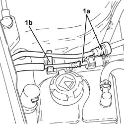
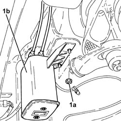
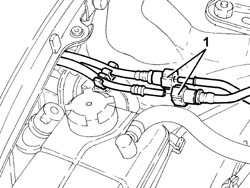
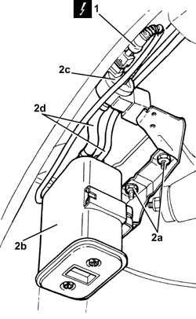

1080E20 ACTIVE CARBON FILTER FOR FUEL VAPOURS - R + R
- Path
- Procedures > 10 ENGINE UNIT > 1080 EXHAUST EMISSION CONTROL SYSTEM > 1080E EVAPORATION CONTROL SYSTEM > 1080E20 ACTIVE CARBON FILTER FOR FUEL VAPOURS - R + R
- Kind
- repair procedure (removal / refitting; the operation number is the code)
- Applies to
- engines: 1.8 T.SPARK, 2.0 JTS, 3.2 V6; all production periods
- Interactive page
- https://sloeber94.github.io/elrnDB-aGt/en/#/125001140
Applies to: engines: 2.0 JTS; all production periods
 Removing
Removing
 Refitting
RefittingPosition the vehicle on a lift.
1. Disconnect the rapid connectors (1a) for the fuel vapour recovery pipes and release the above pipes from the fastenings (1b).

Applies to: engines: 2.0 JTS; all production periods
Proceed with the removal
Op. 4450B04 RIGHT FRONT WHEEL R R.
Proceed with the removal
Op. 7055B66 ENGINE COMPARTMENT DUST SHIELD PROTECTION IN RIGHT FRONT WHEEL ARCH - R.R..
Proceed with the removal
Op. 7055B91 RIGHT FRONT WHEEL ARCH LINER - R.R..
1. Undo the nuts (1a) and remove the fuel vapour active charcoal filter (1b) with the integrated pipes.

Applies to: engines: 2.0 JTS; all production periods
Refitting
RemovingPlace the fuel vapour active charcoal filter in position with the integrated pipes and secure it using the nuts.
Connect the rapid connectors for the fuel vapour recovery pipes and secure them.
Proceed with the refitting
Op. 7055B91 RIGHT FRONT WHEEL ARCH LINER - R.R..
Proceed with the refitting
Op. 7055B66 ENGINE COMPARTMENT DUST SHIELD PROTECTION IN RIGHT FRONT WHEEL ARCH - R.R..
Proceed with the refitting
Op. 4450B04 RIGHT FRONT WHEEL R R.
Remove the vehicle from the lift.
Applies to: engines: 3.2 V6; all production periods
Removing
Refitting.
Position the vehicle on a lift.
Make sure that the ignition key is in the OFF position, then disconnect the negative battery terminal (-).
Description | Connector | |
|---|---|---|
- | Battery | See A1B BATTERY ( BATTERY NEGATIVE ) |
1. Disconnect the quick-release connectors for the fuel vapour pipes.

Applies to: engines: 3.2 V6; all production periods
Proceed with the removal
Op. 4450B04 RIGHT FRONT WHEEL R R.
Proceed with the removal
Op. 7055B66 ENGINE COMPARTMENT DUST SHIELD PROTECTION IN RIGHT FRONT WHEEL ARCH - R.R..
Proceed with the removal
Op. 7055B91 RIGHT FRONT WHEEL ARCH LINER - R.R..
1. Disconnect the electrical connection from the fuel vapour enablement solenoid valve.
Description | Connector | |
|---|---|---|
1 | Fuel vapour recovery solenoid valve | See L10 FUEL VAPOUR RECOVERY SOLENOID |
2. Undo the nuts (2a) and remove the fuel vapour active charcoal filter (2b) complete with intake fuel vapour enablement solenoid valve (2c) and piping (2d).

Applies to: engines: 3.2 V6; all production periods
Refitting
RemovingPlace the fuel vapour active charcoal filter in its housing complete with intake fuel vapour enablement solenoid and piping, then secure it using the nuts.
Connect the electrical connection for the fuel vapour enablement solenoid valve.
Proceed with the refitting
Op. 7055B91 RIGHT FRONT WHEEL ARCH LINER - R.R..
Proceed with the refitting
Op. 7055B66 ENGINE COMPARTMENT DUST SHIELD PROTECTION IN RIGHT FRONT WHEEL ARCH - R.R..
Proceed with the refitting
Op. 4450B04 RIGHT FRONT WHEEL R R.
Connect the quick-release connectors for the fuel vapour pipes.
Connect the negative battery terminal (-).
Remove the vehicle from the lift.
Applies to: engines: 1.8 T.SPARK; all production periods
Removing
Refitting- Position the vehicle on a lift.
- Disconnect the rapid connectors (1a) for the fuel vapour recovery pipes and release the above pipes from the fastenings (1b).
Applies to: engines: 1.8 T.SPARK; all production periods
- Op. 4450B04 RIGHT FRONT WHEEL R R
- Op. 7055B66 ENGINE COMPARTMENT DUST SHIELD PROTECTION IN RIGHT FRONT WHEEL ARCH - R.R.
- Op. 7055B91 RIGHT FRONT WHEEL ARCH LINER - R.R.
- Undo the nuts (1a) and remove the fuel vapour active charcoal filter (1b) with the integrated pipes.
Applies to: engines: 1.8 T.SPARK; all production periods
Refitting
Removing- Place the fuel vapour active charcoal filter in position with the integrated pipes and secure it using the nuts.
- Connect the rapid connectors for the fuel vapour recovery pipes and secure them.
- Op. 7055B91 RIGHT FRONT WHEEL ARCH LINER - R.R.
- Op. 7055B66 ENGINE COMPARTMENT DUST SHIELD PROTECTION IN RIGHT FRONT WHEEL ARCH - R.R.
- Op. 4450B04 RIGHT FRONT WHEEL R R
- Remove the vehicle from the lift.
Topics linked from this page (3)
- 4450B04 RIGHT FRONT WHEEL R R
- 7055B66 ENGINE COMPARTMENT DUST SHIELD PROTECTION IN RIGHT FRONT WHEEL ARCH - R.R.
- 7055B91 RIGHT FRONT WHEEL ARCH LINER - R.R.